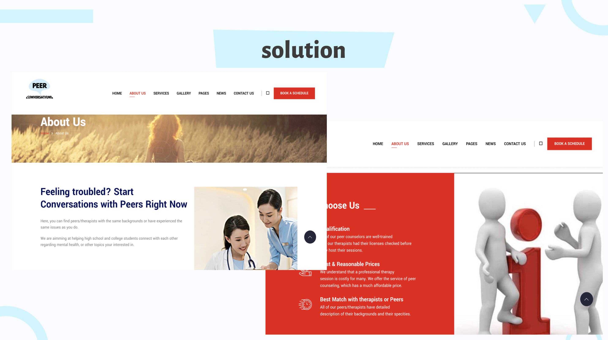
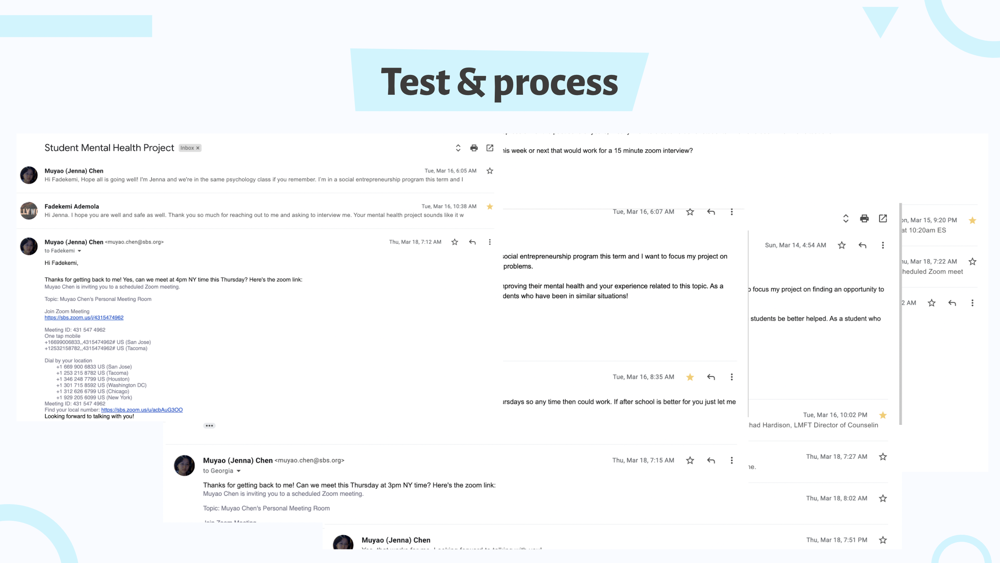

Social Innovators Program
Here's a video that I created on this project:
-transcript-
The problem that my project aims to solve:
I’m trying to solve the problem where high school students cannot find peers who share the same background/experience as they do to talk to.How I discovered this problem:
I hoped to create value for high school students with mental health problems and I discovered the problem by interviewing these students/their friends and many of them reflect that they would prefer to talk to someone whom they can relate to rather than school counselors/therapists.A story about my intervirewee's experience of the problem:
One of my interviewees was from Vietnam, and she complains that talking to her therapist, who is a white person, regarding childhood traumas caused by unpleasant experiences in a traditional Vietnamese school and racial problems have been especially challenging; “My therapist is a nice person and she tried to help. But when it came to my experiences back in Vietnam there’s a lot that she couldn’t understand and relate to.”Why this problem is meaningful to me:
I have struggled with mental health problems and I believe that it is crucial for one to talk to the right person because I think dealing with traumas are about speaking to someone who would understand.My solution and how it works:
I’m planning to create a website for high school students and school counselors. The website will pair students up with peers whom share the same struggle/experiences as they do and allow counselors to make recommendations regarding whom students might be interested in talking to. Below is a screenshot of the website prototype:
The process I went through and the experiments, pilots, and prototypes I ran when developing my idea:
I paired students who share the same experience up to have one on one conversations. I was trying to learn if students are really interested in talking to their peers instead of school counselors and if the conversations are effective. I’ve got positive feedbacks regarding talking to peers rather than counselor and negative ones regarding the effectiveness of the conversation. I learned that in order to make the conversations effective, one of the peers must have more experience regarding a specific topic than the other one.Some challenges I faced and how I overcome them:
I had a hard time trying to find cold contact and pair them up with peers because it does require some time devotion and follow up interviews. I overcame this challenge by contacting more people and also sending out follow up emails if any of them did not respond.